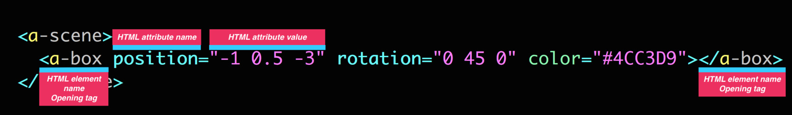
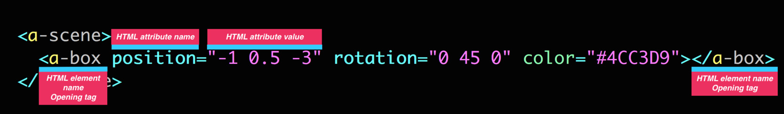

Design Tools For Web3D/XR
Week 8 - AFRAME - 3D assets, animations and effects
https://damskii.github.io/GDUT-DesignToolsWeb3D-course
Week 8 - AFRAME - 3D assets, animations and effects
What we will build
Week 8 - AFRAME - 3D assets, animations and effects
Remix the example
Week 8 - AFRAME - 3D assets, animations and effects
Creating/Importing the mech GLTF file
Lets download a GLTF file from SKETCHFAB
Going to download a free Mech model
https://sketchfab.com/3d-models/mech-drone-8d06874aac5246c59edb4adbe3606e0e
"Mech Drone" by Willy Decarpentrie (https://sketchfab.com/skudgee) licensed under CC-BY-4.0 (http://creativecommons.org/licenses/by/4.0/)
Week 8 - AFRAME - 3D assets, animations and effects
Unzip the mech and look at the files
Week 8 - AFRAME - 3D assets, animations and effects
Compress the textures and add them to the textures folder
Week 8 - AFRAME - 3D assets, animations and effects
Create the GLB using this link
Week 8 - AFRAME - 3D assets, animations and effects
Uploading the ASSET to Glitch
• Within the GLITCH example, select the ASSETS tab and UPLOAD AN ASSET.
• In the ASSETS tab, click once on the preview image
• In the bottom left side, select COPY URL
Week 8 - AFRAME - 3D assets, animations and effects
Select the URL to the index.html file
• look for the 'a-asset-item' on line 91.
• between the src quotes "" paste the URL from your clipboard
Week 8 - AFRAME - 3D assets, animations and effects
animation mixer
use the parameter animation-mixer in the a-entity
https://github.com/n5ro/aframe-extras/tree/master/src/loaders#animation
Week 8 - AFRAME - 3D assets, animations and effects
animation - add rotation to 3D object
animation="property: rotation; dur: 10000;to: 0 360 0; loop: true"
Week 8 - AFRAME - 3D assets, animations and effects
add scene effects - background color
add 'background="color: #D3D3D3"' to a-scene
Week 8 - AFRAME - 3D assets, animations and effects
add scene effects - lighting ambient
add light '< a-light type="ambient" color="white">< /a-light>'
Week 8 - AFRAME - 3D assets, animations and effects
add scene effects - lighting point
add light '< a-light type="point" intensity="1" position="-2 2 2">< /a-light>'
Week 8 - AFRAME - 3D assets, animations and effects
add scene effects - lighting animation
add light ' < a-light type="point" intensity="0" position="-2 2 2" animation="property: light.intensity;dur: 7000; from: 0; to: 1.5; dir: alternate; loop: true"> < /a-light>'
Week 8 - AFRAME - 3D assets, animations and effects
add scene effects - fog
add 'fog="type: exponential; density: 0.12; color: #696969;"' to a-scene
Week 8 - AFRAME - 3D assets, animations and effects
add scene effects - background animation
add 'animation="property: fog.color; dur: 7000;from: #696969; to: #fff;loop: true; dir: alternate"' to a-scene
Week 8 - Task
1. Use your browser to open the URL: https://damskii-aframe-xr-gltf-animation-work-file and REMIX to make your own copy
2. Open another tab to see the finished scene URL: https://damskii-aframe-xr-gltf-animation
3. Add your own model to the scene or get the drone from SKETCHFAB, download and create a GLB
4. Add the animations and effects, copy and paste from the finished scene to your scene
5. Modify the colours and effects however you wish to create a unique scene
https://damskii-aframe-xr-gltf-animation.glitch.me/Thank you - see you next time (谢谢)
Design Tools For Web3D/XR
Week 9 - Introduction to Shaders
https://damskii.github.io/GDUT-DesignToolsWeb3D-course
What is a Shader?
A shader is a program that runs on the GPU (the graphic card) of our computer and it’s mostly used to modify the appearance of 3D objects, create light effects for virtual scenes and process images. Shaders perform those task in a very fast and efficient way.
A single shader is actually composed by two programs: a vertex shader and a fragment shader.
On every frame the GPU runs a tiny program called a vertex shader on every single vertex in the geometry. This tiny program calculates the final position of vertexes on the screen then sends them on to a second tiny program called a fragment shader.
The fragment shader is run on every single fragment (pixel) of the final picture on screen. This tiny program calculates the final color of each pixel based on textures, lighting, and other settings.
Uniforms are sent to both vertex shaders and fragment shaders and contain values that stay the same across the entire frame being rendered. A good example of this might be a light’s position.
Attributes are values that are applied to individual vertices. Attributes are only available to the vertex shader. This could be something like each vertex having a distinct colour. Attributes have a one-to-one relationship with vertices.
.....interesting site on shaders
.....intro section

The surface's facing direction at any point is called its surface normal. The surface normal is a vector that points in the direction the surface is facing.
We’ll update our Vertex Shader to provide each vertex normal to the Fragment Shader. We do this with a varying
In the Fragment Shader we’re going to use the dot product of the vertex normal with a vector that represents a light shining from above and to the right of the sphere. The net result of this gives us an effect similar to a directional light in a 3D package.

With normalised vectors, if they point in exactly the same direction, you get a value of 1. If they point in opposite directions you get a -1. What we do is take that number and apply it to our lighting. So a vertex in the top right will have a value near or equal to 1,

Week 9 - Introduction to Shaders
ShaderFrog
Week 9 - Introduction to Shaders
ShaderFrog - Create an Account
Week 9 - Introduction to Shaders
ShaderFrog - Create a Shader
Week 9 - Introduction to Shaders
ShaderFrog - Export a Shader
Week 9 - Introduction to Shaders
Remix the example
Week 9 - Introduction to Shaders
Add the JSON code
1. Select the 'default.json' file on the left hand side menu
2. Open the exported JSON in a text editor
3. Copy and Paste the JSON code into the 'default.json', replacing the code
Week 9 - Introduction to Shaders
Study your example
Have a look at the index.html and recognise the aframe code to use in other projects
Week 9 - Task
1. Use your browser to open the URL: https://glitch.com/~damskii-aframe-shaderfrog and REMIX to make your own copy
2. Visit https://shaderfrog.com and create your own shader
3. Export the shader from ShaderFrog, then copy/paste the JSON into your project
https://damskii-aframe-shaderfrog.glitch.me/Thank you - see you next time (谢谢)
Design Tools For Web3D/XR
Dr. Damian Hills
https://damskii.github.io/GDUT-DesignToolsWeb3D-course
Design Tools For Web3D/XR
About the course
This course will introduce a series of web based design tools for displaying and generating 3D content for online delivery using Web3D standards.
These design tools allow the student to create online browser experiences to be displayed in 3D and also WebXR immersive delivery platforms for both AR and VR.
Design Tools For Web3D/XR
Week 1 - Introduction to Web3D / Web XR
https://damskii.github.io/GDUT-DesignToolsWeb3D-course
Week 1 - Overview
• What is Web3D and WebXR
• Tools for Web3D/XR you can use online to create your own experiences
What is Web3D?
• term used to describe interactive 3D content included in an HTML page
• viewable by a common Web browser via a special 3D viewer
• open formats for 3D viewing transmission, such as glTF
What is the WebXR standard?
• is a group of standards which are used together to support rendering 3D scenes to hardware designed for presenting VR/AR
• It builds upon a set of browser based technologies that include the WebGL standard that supports 3D rendering in browser environments.
• supports a range of mixed reality devices with an enabled browser, such as the Oculus browser for the Quest.
Why web tools for 3D/XR
• Designers and Developers make websites that are easy to maintain
• Interoperability of online tools allow for interesting combinations of techniques
• Content you create is useful is many web contexts
Overview of Web Tools
• aframe - web framework for building XR experiences
• glitch - browser based project management
Glitch.com - AFRAME
Glitch.com - "Project Management"
Glitch.com - "Remix a project"

Glitch.com - "Show next to code"

Glitch.com - "Demo Project"
Demo : https://damskii-aframe-xr-gltf.glitch.me/
Demo (project): https://glitch.com/~damskii-aframe-xr-gltf
On IOS? Get viewer app for WebXR
Week 1 - Task
1. create account for glitch.com
2. open your browser and the aframe starter project : https://glitch.com/~aframe
3. 'remix' this project and make your own copy
4. edit some of the aframe markup and change the sizes and positions of the objects
Thank you - see you next time (谢谢)
Design Tools For Web3D/XR
Week 2 - AFRAME introduction
https://damskii.github.io/GDUT-DesignToolsWeb3D-course
Week 2 - AFRAME introduction
Overview
• provides easy-to-use HTML elements for starters called primitives.
• show how to modify basic meshes through HTML attributes
• to learn how to change colors, positions, rotations, scale
Week 2 - AFRAME introduction
Primitives
 

Week 2 - AFRAME introduction
Position
• Position defines where objects are in 3D space (X, Y, Z) in meters.
• Change the position of the objects via the position HTML attribute values.
AFRAME documentation - positionWeek 2 - AFRAME introduction
Rotation
• Rotation defines orientation of objects in 3D space (about the X, Y, Z axes) in degrees
AFRAME documentation - rotationWeek 2 - AFRAME introduction
Adding Primitives
Add primitives the scene by adding HTML elements under 'a-scene'
AFRAME documentation - primitivesWeek 2 - Task
1. got to aframe.io and click GET STARTED
2. select 'remix the starter example on Glitch' link to open the link : https://glitch.com/~aframe
3. select 'remix your own' to create your own copy
4. change the 'position' and 'rotation' and 'color' values of each of the primitives to create your own scene
4. add other primitives by copying any of the primitives eg 'a-box'
Thank you - see you next time (谢谢)
Design Tools For Web3D/XR
Week 3 - Rendering a 360 image in AFRAME
https://damskii.github.io/GDUT-DesignToolsWeb3D-course
Week 3 - AFRAME Rendering a 360 image
Remix the example on Glitch
• Use your browser to open the URL: https://glitch.com/~damskii-aframe-360
• Select REMIX YOUR OWN on the bottom right hand side
Week 3 - AFRAME Rendering a 360 image
Get a 360 image
• One you have created
• Or download from a free site - eg. https://pixexid.com/search/360
Week 3 - AFRAME Rendering a 360 image
Uploading the ASSET to Glitch
• Within the GLITCH example, select the ASSETS tab and UPLOAD AN ASSET.
Week 3 - AFRAME Rendering a 360 image
Select the URL for the ASSET
• In the ASSETS tab, click once on the preview image
• In the bottom left side, select COPY URL
Week 3 - AFRAME Rendering a 360 image
Select the URL to the index.html file
• look for the 'a-sky' primitive on like 14.
• in the 'src' field, delete existing link between the quotes ""
• between the quotes "" paste the URL from your clipboard
Week 3 - Task
1. Use your browser to open the URL: https://glitch.com/~damskii-aframe-360
2. Within the GLITCH example, select the ASSETS tab and UPLOAD AN ASSET.
3. In the ASSETS tab, click once on the preview image and select COPY URL
4. look for the 'a-sky' primitive on line 14, in the 'src' field, delete existing link between the quotes ""
5. between the quotes of the 'a-sky' src "" paste the URL from your clipboard
Thank you - see you next time (谢谢)
Design Tools For Web3D/XR
Week 4 - AFRAME scene construction
https://damskii.github.io/GDUT-DesignToolsWeb3D-course
Week 4 - AFRAME scene construction
REMIX the example
Open https://glitch.com/~aframe-xr-scene and select REMIX to make your own copy
Week 4 - AFRAME scene construction
Adding a Camera
Add a camera using 'a-camera'
documentation on scene constructionWeek 4 - AFRAME scene construction
Adding an Environment
Add a camera using 'a-entity' environment plugin
documentation on scene constructionWeek 4 - AFRAME scene construction
Adding an Ambient Light
Add a light using 'a-entity'
documentation on scene constructionWeek 4 - AFRAME scene construction
Adding a Directional Light
Add a directional light using 'a-light'
documentation on scene constructionWeek 4 - AFRAME scene construction
Adding a Box
Add a box using 'a-box'
documentation on scene constructionWeek 4 - Task
1. Use your browser to open the URL: https://glitch.com/~aframe-xr-scene and select REMIX to make your own copy
2. Modify the a-camera settings
3. Modify the environment settings
4. Modify the lighting
5. Change the a-box settings or add new primitives for eg, a-sphere
Thank you - see you next time (谢谢)
Design Tools For Web3D/XR
Week 5 - AFRAME animation
https://damskii.github.io/GDUT-DesignToolsWeb3D-course
Week 5 - AFRAME animation
Animating a Box
Open https://glitch.com/~damskii-aframe-animation and select REMIX to make your own copy
Look at the animation property for 'a-box' on Line 98
documentation on aframe animationWeek 5 - AFRAME animation
Animating a Box
Modify the 'property: position; to: 1 8 -10;' values for position on Line 98
documentation on aframe animationWeek 5 - AFRAME animation
Animating a Box
Modify the 'dur: 2000;' value for duration on Line 98
documentation on aframe animationWeek 5 - AFRAME animation
Animating a Box
Replace the animation code on Line 98 with the animation code on Line 101
Make sure you only select the code between the '< !--' and '-- >' comments
documentation on aframe animationWeek 5 - Task
1. Use your browser to open the URL: https://glitch.com/~damskii-aframe-animation and select REMIX to make your own copy
2. Modify the 'property: position; to: 1 8 -10;' values for position on Line 98
3. Modify the 'dur: 2000;' value for duration on Line 98
4. Replace the animation code on Line 98 with the animation code on Line 101
Thank you - see you next time (谢谢)
Design Tools For Web3D/XR
Week 6 - AFRAME & 3D assets
https://damskii.github.io/GDUT-DesignToolsWeb3D-course
Glitch.com - "Demo Project"
Demo : https://damskii-aframe-xr-gltf.glitch.me/
Demo (project): https://glitch.com/~damskii-aframe-xr-gltf
On IOS? Get viewer app for WebXR
Week 6 - AFRAME & 3D assets
Remix the example and look at how a-assets are referenced in AFRAME

glTF™ (GL Transmission Format) is a royalty-free specification for the efficient transmission and loading of 3D scenes and models by applications.
glTF minimizes both the size of 3D assets, and the runtime processing needed to unpack and use those assets.
 gltf
gltf
glTF minimizes both the size of 3D assets, and the runtime processing needed to unpack and use those assets.
glTF defines an extensible, common publishing format for 3D content tools and services that streamlines authoring workflows and enables interoperable use of content across the industry.
Week 6 - AFRAME & 3D assets
GLTF and GLB
GLB is the binary file format representation of 3D models saved in the GL Transmission Format (glTF)
Week 6 - AFRAME & 3D assets
Creating/Importing a GLTF file
Lets download a GLTF file from SKETCHFAB
Going to a download free VW Bus Model - https://sketchfab.com/3d-models/vw-bus-dd15ecf964bf46abb3b307bcf6674ad4
This work is based on "VW Bus" (https://sketchfab.com/3d-models/vw-bus-dd15ecf964bf46abb3b307bcf6674ad4) by PapaX007 (https://sketchfab.com/PapaX007) licensed under CC-BY-4.0 (http://creativecommons.org/licenses/by/4.0/)
Week 6 - AFRAME & 3D assets
Unpacking the GLTF file zip
Week 6 - AFRAME & 3D assets
Using Blender to work with GLTF 3D files
Get Blender here (FOR FREE)Week 6 - AFRAME & 3D assets
Importing the GLTF model using Blender
Week 6 - AFRAME & 3D assets
Exporting the GLB model using Blender (with compression)
Week 6 - AFRAME & 3D assets
Exporting the GLB model with DRACO compression
Draco is an open-source library for compressing and decompressing 3D geometric meshes and point clouds. It is intended to improve the storage and transmission of 3D graphics
About DRACO compressionWeek 6 - Task
1. Use your browser to open the URL: https://glitch.com/~damskii-aframe-xr-gltf
2. Within the GLITCH example, select the ASSETS tab and UPLOAD AN ASSET to upload your GLTF file
3. In the ASSETS tab, click once on the preview image and select COPY URL
4. look for the 'a-asset-item' on line 82, in the 'src' field, delete existing link between the quotes ""
5. between the quotes of the 'a-asset-item' src "" paste the URL from your clipboard
Thank you - see you next time (谢谢)
Design Tools For Web3D/XR
Week 7 - Web Digital Video Effects
https://damskii.github.io/GDUT-DesignToolsWeb3D-course
Week 7 - Web Digital Video Effects
Seriously.js
a real-time, node-based video compositor for the web
Seriously.jsWeek 7 - Web Digital Video Effects
Remix the example below and study aspects of the code
https://glitch.com/~damskii-seriously-effect-chainWeek 7 - Web Digital Video Effects
Modify the Hue/Saturation effect to change colors (Line 94-95)
https://glitch.com/~damskii-seriously-effect-chainWeek 7 - Web Digital Video Effects
Each effect section forms a 'chain' of effects originating in 'source video'
https://glitch.com/~damskii-seriously-effect-chainWeek 7 - Web Digital Video Effects
Modify the 'target.source = ascii' to create the ascii effect (Line 131)
https://glitch.com/~damskii-seriously-effect-chainWeek 7 - Web Digital Video Effects
Modify the 'ascii.source = huesaturation' to add ascii to the chain (Line 103)
https://glitch.com/~damskii-seriously-effect-chainWeek 7 - Web Digital Video Effects
The huesaturation and ascii effects are now 'chained' and both modify the video source
https://glitch.com/~damskii-seriously-effect-chainWeek 7 - Web Digital Video Effects
Add your own video source or download one from a video site eg, https://www.pexels.com/videos/
https://glitch.com/~damskii-seriously-effect-chainWeek 7 - Web Digital Video Effects
1. Upload the asset by selecting ASSETS in the left glitch menu
2. Select the video and COPY URL
3. Paste URL into 'videoName' variable, between the quotes "" (Line 47)
https://glitch.com/~damskii-seriously-effect-chainWeek 7 - Web Digital Video Effects
Now experiment with uncommenting different effects and adding them to the chain (Lines 110-129)
https://glitch.com/~damskii-seriously-effect-chainWeek 7 - Task
1. Use your browser to open the URL: https://glitch.com/~damskii-seriously-effect-chain and select REMIX to make your own copy
2. Modify the current effects
3. Add Effects to the chain
https://glitch.com/~damskii-seriously-effect-chain